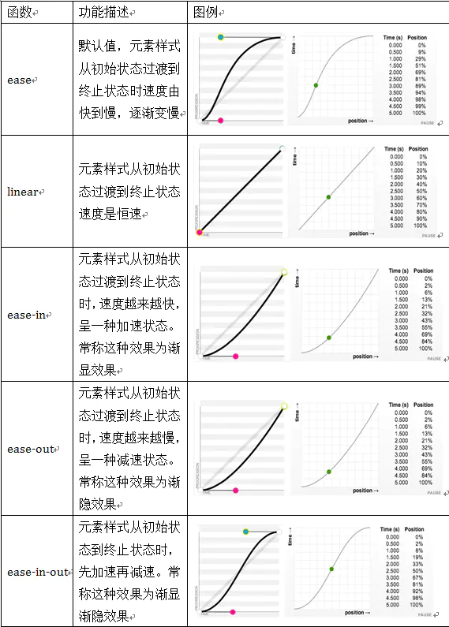

Luke Wroblewski在2013年11月首次提出了骨架屏这个概念，建议开发者们使用"骨架屏”替换传统页面的spinners加载效果
纯CSS实现
1 | <template> |
keyFrames详解
- 创建动画的原理是，将一套 CSS 样式逐渐变化为另一套样式。
- 通过 @keyframes 规则，您能够创建动画。
- @keyframes定义一个动画，并定义具体的动画效果，比如是放大还是位移等等。
- @keyframes 它定义的动画并不直接执行，需要借助animation来运转。
- 在动画过程中，您能够多次改变这套 CSS 样式。
- 以百分比来规定改变发生的时间，或者通过关键词 “from” 和 “to”，等价于 0% 和 100%。
Keyframes被称为关键帧，其类似于Flash中的关键帧。在CSS3中其主要以“@keyframes”开头，后面紧跟着是动画名称加上一对花括号“{…}”，括号中就是一些不同时间段样式规则。
1 | @keyframes changecolor{ |
animation
1 | animation: [name] [duration] [timing-function] [delay] [iteration-count] [direction] [fill-mode] [play-state]; |
| 属性 | 属性单独使用 | 属性作用 | 属性可选值 |
|---|---|---|---|
| name | animation-name | 动画名称（@keyFrames name） | @keframes name |
| duration | animation-duration | 动画运行时间(1s) | 参数num(1s or 0.5s) |
| timing-function | animation-timing-function | 参数num(1s or 0.5s) | - linear [动画从头到尾的速度是相同的] - ease [默认。动画以低速开始，然后加快，在结束前变慢] - ease-in [动画以低速开始] - ease-out [动画以低速结束] - ease-in-out [动画以低速开始和结束] - cubic-bezier(n,n,n,n) [在 cubic-bezier 函数中自己的值。可能的值是从 0 到 1 的数值] |
| delay | animation-delay | 设置动画在启动前的延迟间隔 | time [可选。定义动画开始前等待的时间，以秒或毫秒计。默认值为0] |
| iteration-count | animation-iteration-count | 定义动画的播放次数 | - n [一个数字，定义应该播放多少次动画] - infinite [指定动画应该播放无限次（永远] |
| diretion | animation-diretion | 指定是否应该轮流反向播放动画 | - normal [默认值。动画按正常播放] - reverse [动画反向播放] - alternate [动画在奇数次（1、3、5…）正向播放，在偶数次（2、4、6…）反向播放] - alternate-reverse [动画在奇数次（1、3、5…）反向播放，在偶数次（2、4、6…）正向播放] - initial [置该属性为它的默认值。请参阅initial] - inherit [从父元素继承该属性。请参阅inherit] |
| fill-mode | animation-fill-mode | 规定当动画不播放时（当动画完成时，或当动画有一个延迟未开始播放时），要应用到元素的样式 | |
| play-state | animation-play-state | 指定动画是否正在运行或已暂停 |
示例：创建一个动画名叫“changecolor”，在“0%”时背景色为red,在20%时背景色为blue，在40%背景色为orange，在60%背景色为green，在80%时背景色yellow，在100%处时背景色为red。
1 |
|
设置动画播放方式
语法规则
animation-timing-function:ease(由快到慢，逐渐变慢) | linear | ease-in | ease-out | ease-in-out | cubic-bezier(<number>, <number>, <number>, <number>) [, ease | linear | ease-in | ease-out | ease-in-out | cubic-bezier(<number>, <number>, <number>, <number>)]*

设置动画播放方向
animation-direction属性主要用来设置动画播放方向，其语法规则如下：
- animation-direction:normal | alternate [, normal | alternate]*
其主要有两个值：normal、alternate
- normal是默认值，如果设置为normal时，动画的每次循环都是向前播放；
- 另一个值是alternate，他的作用是，动画播放在第偶数次向前播放，第奇数次向反方向播放。
设置动画的播放状态
animation-play-state属性主要用来控制元素动画的播放状态。
参数：
- 其主要有两个值：running和paused。
- 其中running是其默认值，主要作用就是类似于音乐播放器一样，可以通过paused将正在播放的动画停下来，也可以通过running将暂停的动画重新播放，这里的重新播放不一定是从元素动画的开始播放，而是从暂停的那个位置开始播放。另外如果暂停了动画的播放，元素的样式将回到最原始设置状态。
例如，页面加载时，动画不播放。代码如下：
- animation-play-state:paused;
设置动画时间外属性
- animation-fill-mode属性定义在动画开始之前和结束之后发生的操作。主要具有四个属性值：none、forwards、backwords和both。其四个属性值对应效果如下：
- none | 默认值，表示动画将按预期进行和结束，在动画完成其最后一帧时，动画会反转到初始帧处
- forwards | 表示动画在结束后继续应用最后的关键帧的位置
- backwards | 会在向元素应用动画样式时迅速应用动画的初始帧
- both | 元素动画同时具有forwards和backwards效果
vue-content-loader实现
git地址：https://github.com/egoist/vue-content-loader
安装
yarn add vue-content-loader
使用
1 | <template> |
内置loaders
1 | import { |
| 属性 | 类型 | 默认值 | 描述 |
|---|---|---|---|
| width | number | 400 | |
| hieght | number | 130 | |
| speed | number | 2 | |
| preserveAspectRatio | string | ‘xMidYMid meet’ | |
| primaryColor | string | ‘#f9f9f9’ | |
| secondaryColor | string | ‘#ecebeb’ | |
| uniqueKey | string | randomId() | 唯一ID，需保持与SSR一致 |
| animate | boolean | true | |
| baseUrl | string | empty string | 如果你在<head />中使用了<base url="/">。默认是个空字符串。这个属性通常被用作<content-loader :base-url="$route.fullPath" />会使用相对路径填充svg属性 |
| primaryOpacity | number | 1 | 背景的不透明度（0=透明， 1=不透明），用于解决Safari中的问题 |
| secondaryOpacity | number | 1 | 背景的不透明度（0=透明， 1=不透明），用于解决Safari中的问题 |
If you like this blog or find it useful for you, you are welcome to comment on it. You are also welcome to share this blog, so that more people can participate in it. If the images used in the blog infringe your copyright, please contact the author to delete them. Thank you !